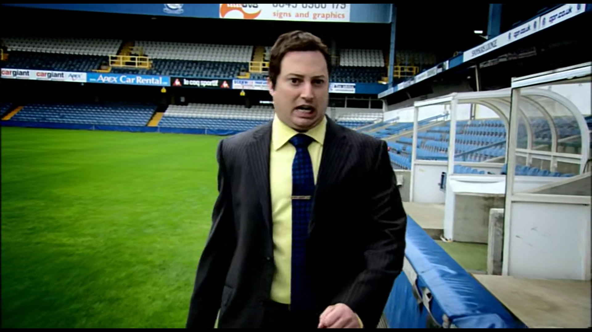

Tomorrow night on Sky Sports 4, it's the clash of the South Coast as the irresistible force of Portsmouth meet the unmovable object of Southampton, in a clash that's gonna go down in history as one of the many football matches that are happening this weekend. Meanwhile, there are old scores to be settled at The Dell, scores like 1-0 and 2-2 that have happened in previous years. Who will win this time between Sunderland and Blackburn? Then on Sunday, live, the battle for the North-West as Shrewsbury meet Macclesfield, in a match already being described as "on this Sunday". Coming up midweek, the giants of Char  lton play host to the titans of Ipswitch, making them both seem normal sized. Then, Tottenham play Bolton for the second time this season to see who will win that. Also Manchester United return to Aston Villa, for a game of football, to determine the victors, for this year at least. And indeed at most. Looking ahead to March, every football team will be playing football several times and in various combinations. And you can catch all of that football here, where we'll be showing all the football, all the time. Catch all of the constantly happening football here. It's all here and it's all football, always. It is impossible to keep track of all the football, but your best chance is here. Thousands and thousands of hours of football, each more climactic than the last. Constant, dizzying, 24 h our, year long, endless football. Every kick in it massively mattering to someone, presumably. Watch it all, all here, all the time forever, it will never stop. The football is officially going on forever. It will never be finally decided who has won the football. There is still everything to play for and forever to play it in.
So that's the football,